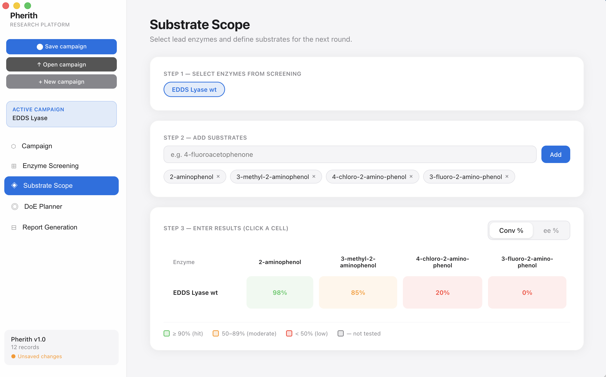
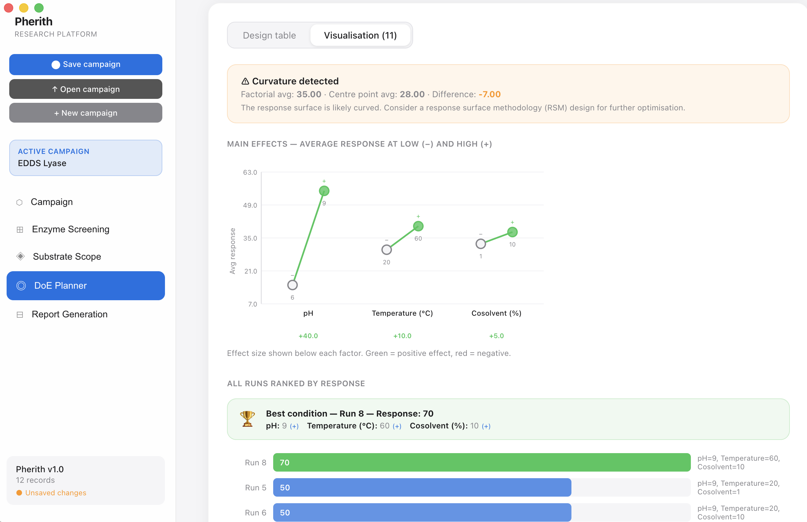
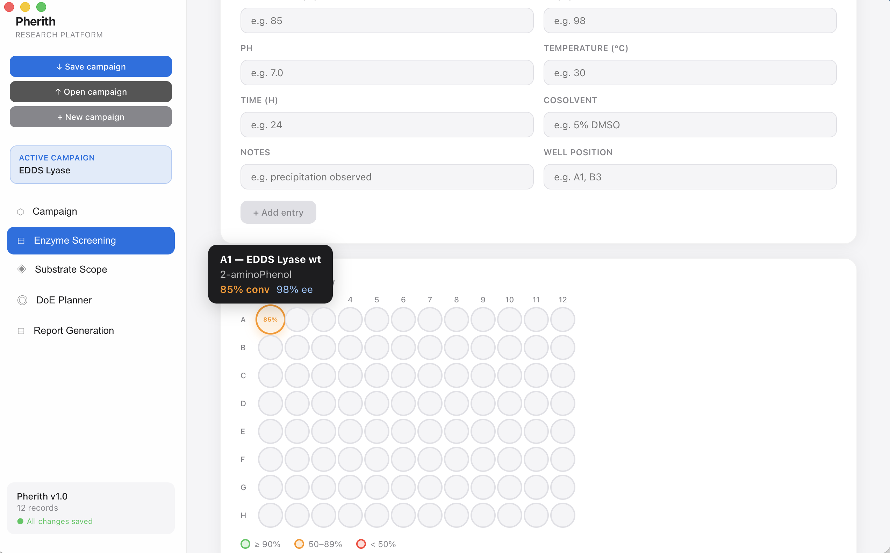

A desktop platform for structured design, documentation, and analysis of biocatalysis research campaigns. Built for enzyme discovery, directed evolution, and reaction engineering workflows.
Overview
Pherith provides a structured environment for managing the full lifecycle of a biocatalysis campaign — from substrate screening and enzyme variant tracking to reaction condition optimisation and result documentation. It runs entirely offline, keeping experimental data local and reproducible.
Track substrate scope, conversion data, and selectivity across enzyme panels in a structured, exportable format.
Build and visualise factorial and optimisation DoE campaigns with integrated response surface analysis.
Maintain structured records of hypotheses, conditions, and outcomes across multi-stage research campaigns.
No cloud dependency. All data stays local. Export to standard formats for integration with lab notebooks and publications.



Download
Project status
Pherith is under active development as a non-commercial research tool. Feedback from the biocatalysis and enzyme engineering community is welcome. Institutional enquiries and collaboration proposals can be directed via GitHub.